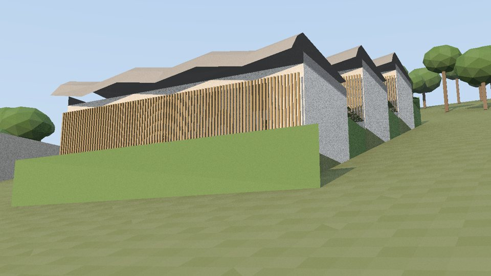

01 · Arquitectura · Anapoima, Cundinamarca
Casa Umbral
Una casa de tierra en una ladera de tierra caliente, diseñada con 22 experimentos de física sobre un mismo modelo paramétrico: sol, aire, agua, tierra, sismo y costo.
98,6 %del año en confort sin aire acondicionado
−67 %de tierra movida frente a la banca plana
171 m³de lluvia captada al año
233 Ma 50 años, contra 242 M de la convencional
RhinoGrasshopperLadybugHoneybeeEnergyPlusRadiance
Ver el proyecto →